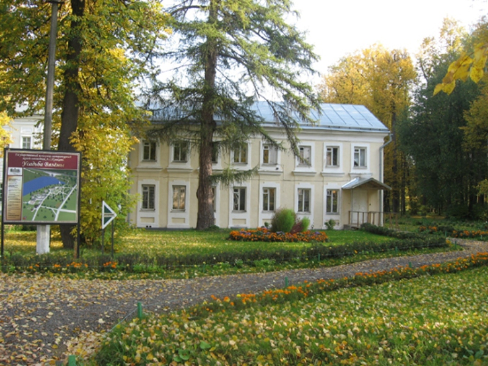

|  | Министерство культуры Российской Федерации Портал Культура.рф Проект «Образы России» |
Музей-заповедник А.С.Пушкина (усадьба Вяземы)
Западный флигель

ФЛИГЕЛИ: Формирование жилого комплекса началось в 1771 г. с постройки при старом деревянном доме парных кирпичных флигелей, один из которых служил кухней. Двухэтажные флигели на парадном дворе, 1771 - 1772 гг., сначала были невелики и идентичны друг другу, представляя направление в классицизме, где ордерные элементы отсутствуют. В 1830-х гг. постройки расширены сенями, изменены пропорции нижних окон. Со вре¬менем убранство зданий было упрощено.
Западный, кухонный флигель, построенный в 1772 г., лучше сохранил черты изначальной архитектуры. Его фасады, не имеющие композиционного центра, равномерно членятся вертикальными звеньями, образованными сращением наличников верхних и нижних окон. Планировка в здании новая, но сохранились сводчатое помещение кладовой и сени с деревянной лестницей и обработкой плафонов и стен панелями по образцу главного дома.
В настоящее время в здании расположена научная часть Музея-заповедника. После проведения реставрации в здании будет размещена экспозиция, рассказывающая об истории усадьбы после 1917 года.